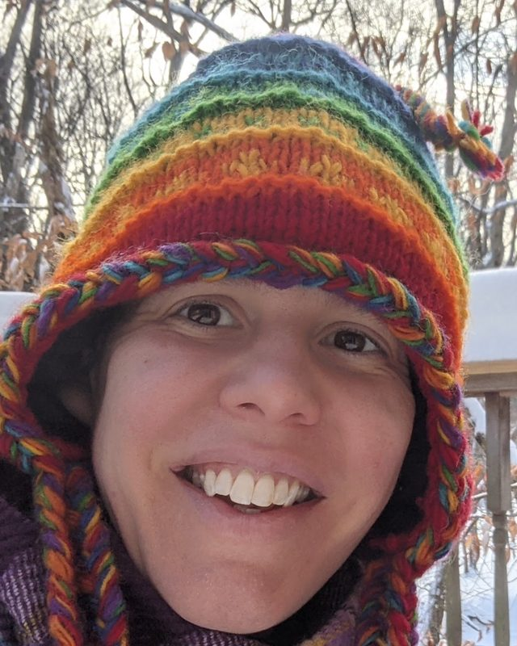

Sarah Hewitt
Center Operations and Curriculum Lead
Sarah leads center operations and curriculum, and works alongside Courtney on the Harbor Academy classroom.
Full bio: TBC.
A small team of occupational therapy, education and DIR/Floortime staff, led by the founder who still works on the floor. Here is who they are, in their own words.
I like to think of myself as a behavior detective.
Founder and Clinical Director
Instead of focusing only on what a child is doing, Courtney wants to understand why, and what the behavior may be telling her about what the child needs. She holds a Master of Science in Occupational Therapy from Brenau University and her DIR Expert Practitioner certification, and she is a licensed occupational therapist in New Jersey, New York and Florida. Her advanced training includes sensory integration through the STAR Institute, the SOS Approach to Feeding, and aquatic therapy through Angelfish. She is a former DIR Training Leader with ICDL and mentors a DIR/Floortime center in Bucharest, Romania.
I believe children thrive when they feel loved and understood.
Occupational therapy, education and DIR/Floortime staff, across the preschool, the day program and individual sessions.
Center Operations and Curriculum Lead
Sarah leads center operations and curriculum, and works alongside Courtney on the Harbor Academy classroom.
Full bio: TBC.
Certified Occupational Therapy Assistant, DIR-Basic Practitioner
Alicia has spent nearly 11 years as a pediatric certified occupational therapy assistant, mostly in clinics and also in schools, with children and young adults from 3 months to 20 years old. She earned her bachelor's degree at William Paterson University and her associate's degree in occupational therapy at Eastwick College, and is licensed in New Jersey and New York. She completed DIR 101 and 201 through ICDL.
She starts by learning what a child loves, what makes them laugh, and what feels hard, then uses that to make therapy playful. Outside of work she is usually with her two dogs, Winston and Lucy, listening to an audiobook, or on Long Beach Island, where she has spent every summer since she was born.
I believe children thrive when they feel safe, understood, and when they are given the time and space to grow at their own pace.

Educator and DIR/Floortime Practitioner, Homeschool Support
Liz holds a Master of Arts from the Steinhardt School of Culture, Education, and Human Development at New York University, and has worked in education for over 20 years: math and science teacher in public and private schools, developmental preschool teacher, student advisor, curriculum designer, outdoor education facilitator and homeschooling parent. She holds a DIR Floortime Basic Certificate.
Her particular interest is supporting children who do not fit the mold of a typical school setting. What she wishes parents knew: development is not linear. Just because a child can empathize with a friend one day does not mean they can the next. Outside of work: hiking and camping, audiobooks, crochet, board games and cats.
I believe children thrive when they have as much freedom to play as we can allow them, while being in community with others.
DIR/Floortime Assistant
Mya holds a bachelor's degree in psychology and is CPR certified. She has worked with children in developmental, educational and recreational settings, as a Montessori teacher assistant, as an assistant coach for ages 5 to 13, and now as a DIR/Floortime assistant.
She builds a trusting relationship first, then follows the child's lead and uses their interests to open up play, communication and confidence. Outside of work she is with family and friends, at concerts, or finding new places to explore.
I believe children thrive when they feel safe, understood, supported, and free to be themselves while exploring the world around them.
DIR/Floortime Assistant
Ritaj holds a Bachelor of Social Work and a DIR/Floortime 102 certificate. She has worked in family homes with children aged 5 and under and with expecting mothers, including infants as young as 6 weeks.
Her approach is patient and individualized: she tries to understand each child as an individual rather than expecting them to learn or communicate the same way as everyone else. Outside of work she travels, does pilates, and is usually trying a new coffee shop with her husband. She has been to 8 countries across 4 continents.
I believe children thrive when they feel valued, understood, and encouraged to be themselves.
A free consultation and tour is the easiest way to see the room and meet the people in it.
Pick the program that fits and book from its page.